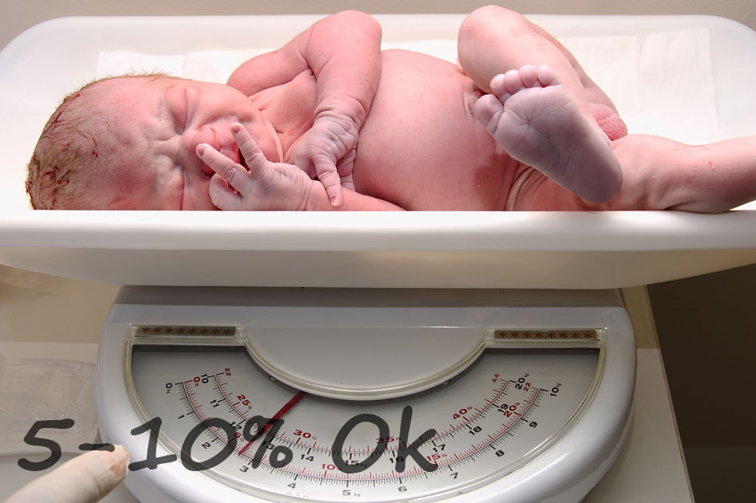
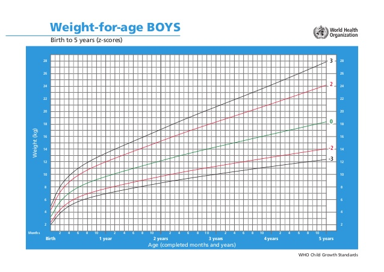
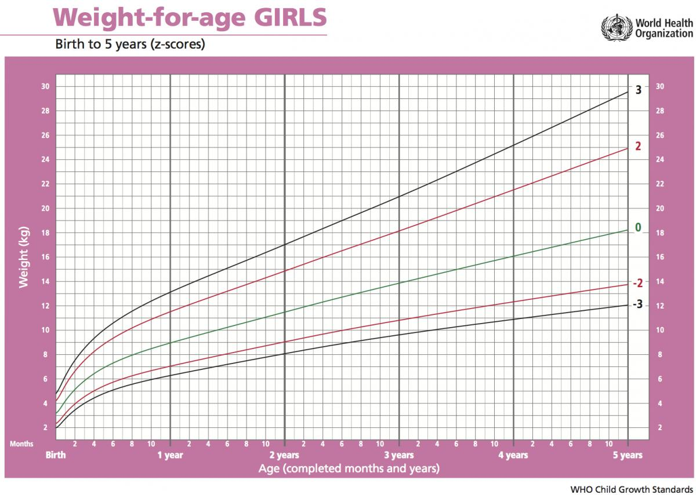

Вагоме питання

Із питанням ваги малюка мама зіштовхується ще в пологовому будинку.
Дитина народжується з певною вагою. На 3-4 день відбувається її зниження на 5-10% - це вважається нормою і має назву фізіологічної втрати маси тіла.
Фізіологічна втрата маси тіла відбувається через:
- Відходження меконію - перших випорожнень дитини
- Втрату рідини через шкіру і легені
- Втрату рідини з початком роботи нирок
- Початок самостійного смоктання, який є для дитини енерговиснажливим процесом
Пік втрати ваги припадає на 72 години. Фізіологічна втрата маси тіла ніякої корекції не потребує, лише правильної організації грудного вигодовування і частого прикладання, навіть якщо мамі здається, що в грудях у неї - кілька крапель. Молозиво є досить калорійне і повністю задовольнить вікові потреби дитини. На 10-14 день, зазвичай, діти відновлюють вагу, яка була при народженні.
Є діти, які втрачають більше, ніж 10% . Чинники ризику:
- Кесарів розтин
- Перша дитина
- Довготривалі пологи
- Медикаменти в пологах
- Відокремлення від мами
- Відтермінована лактація
- Пізній початок грудного вигодовування
Такі діти також вимагають частого прикладання до грудей і динамічного спостереження медпрацівників. Якщо вага продовжує втрачатись після 4 доби, вирішується питання про догодовування, під контролем лікарів.
Щоб бути впевненому, що малюку вистачає молока, достатньо один раз на місяць проводити контрольні зважування. На першому місяці життя доцільно провести додаткове зважування на 10-14 день, щоб оцінити відновлення фізіологічної втрати маси тіла.

Ще в 90-х роках спеціалісти ВООЗ зауважили, що в дітей на грудному вигодовуванні темпи набору ваги і зросту відрізняються від прийнятих раніше стандартів. Оскільки грудне вигодовування - найкраща їжа для малюка, саме немовлята, що харчуються грудним молоком, стали об'єктом для розробки нових стандартів.
Масо-зростові показники дітей на виключно грудному вигодовуванні і дітей, які отримують суміш, різко відрізняються. Нормою вважається, якщо дитина на виключно грудному вигодовуванні набирає 500г за місяць або 125г за тиждень. Це мінімально допустимі значення, які не потребують корекції з боку харчування дитини.
Є випадки, коли діти на виключно грудному вигодовуванні перші місяці набирають досить багато (1,5-2 кг), що починає хвилювати маму. На прийомі у педіатра можна почути: "Ви перегодовуєте дитину", "у Вас "надто жирне" молоко", "потрібен режим у годуванні". Це все міфи грудного вигодовування і єдине, про що це свідчить, що у Вас все гаразд із лактацією.
Далі темпи набору ваги зменшуються. Це пов'язано з тим, що малюк росте і розвивається, його день стає більш насиченим. Після 4 місяців дитина починає бути більш активною, робить перші спроби сісти, перевертається на живіт і навпаки. Діти від 6 місяців набирають ще менше: в середньому 200-400г за місяць. Із 9 місяців, коли дитина вже активно повзає, стає на ноги (а деякі діти роблять спроби ходити), набір ваги становить 100-300г в місяць.

Що може бути причиною недостатнього набору ваги?
- Дитина хвора або присутня вроджена аномалія
- Дитина недоотримує молока з грудей через неправильну організацію грудного вигодовування
- Дитина отримує ще щось, крім грудного молока
- Мама почала приймати протизаплідні таблетки
- У мами справді мало молока
Отже, догодовуєм. Чим? Якщо немає протипоказів з боку матері і дитини - зцідженим грудним молоком. Якщо такий варіант є не можливий, слід шукати донорське грудне молоко. Бувають випадки, коли обидва згадані варіанти неможливо реалізувати, тоді залишається лише адаптована суміш.
Як? Тільки не з пляшки. Пристосувань для догодовування насправді є багато: чашка, шприц без голки, піпетка, поїльник Хабермана, ложка, пальцеве годування, система догодовування біля грудей. Скільки і як часто? Це питання вирішується індивідуально, залежно від віку дитини та недобору ваги.
Причини недостатнього набору ваги оцінює консультант у парі з педіатром, дружнім до грудного вигодовування. Адже причин вводити догодовування насправді є дуже мало, а міфів про «мало молока» - достатньо.
статтю редагувала Зоряна Мацях